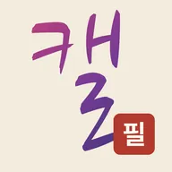
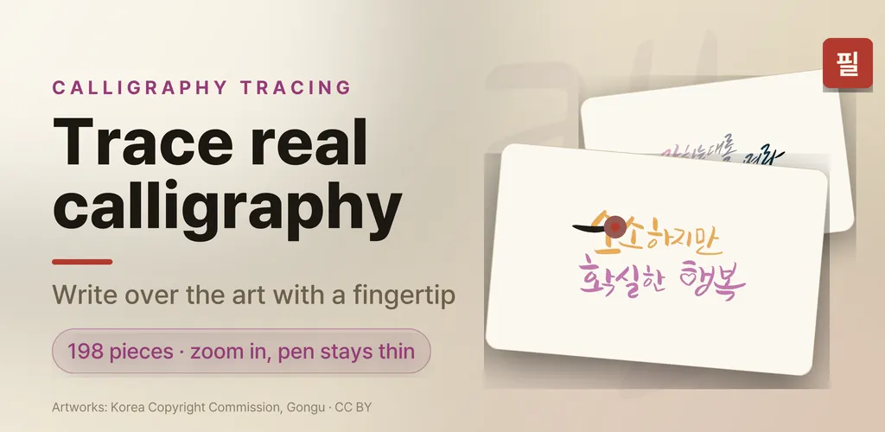
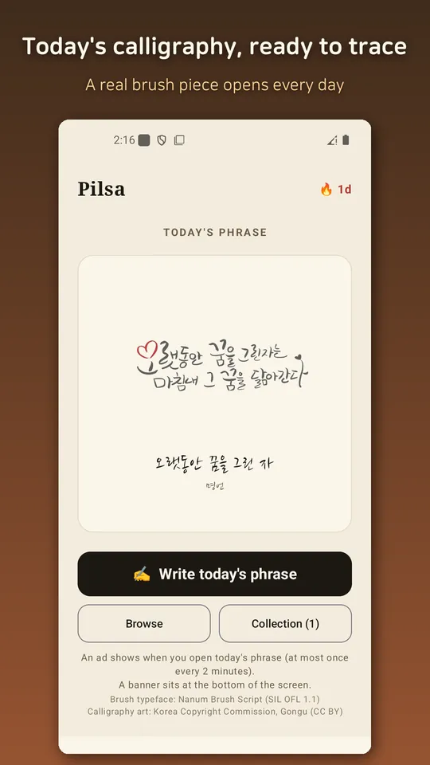
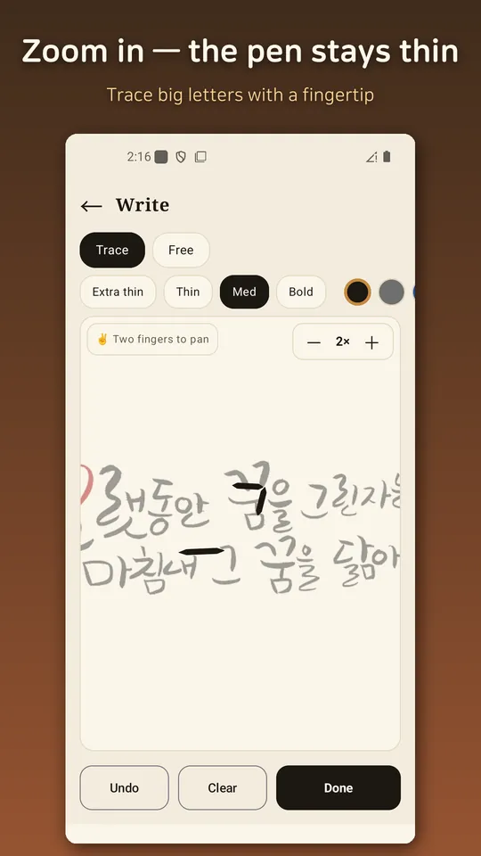
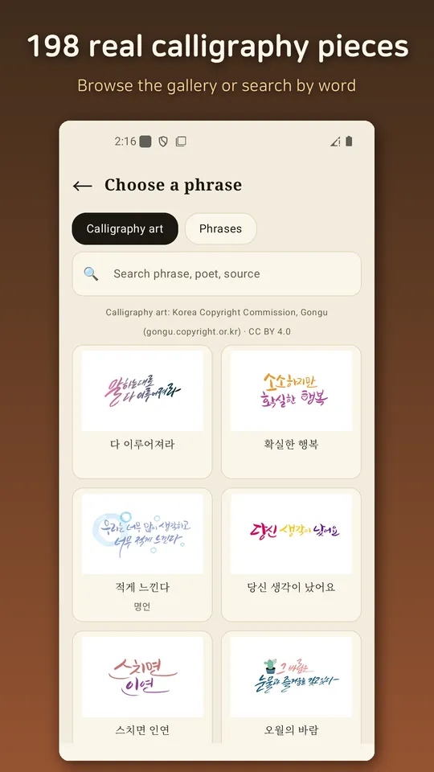
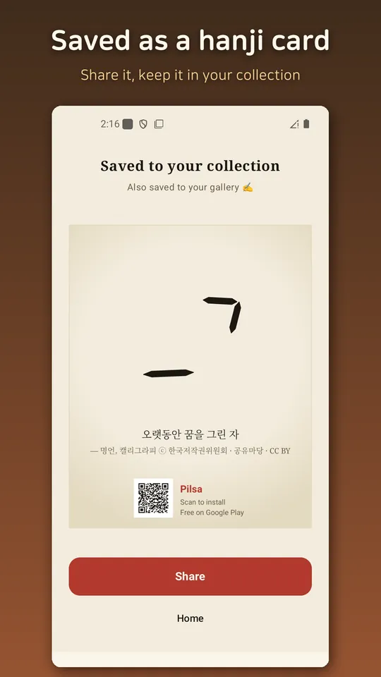
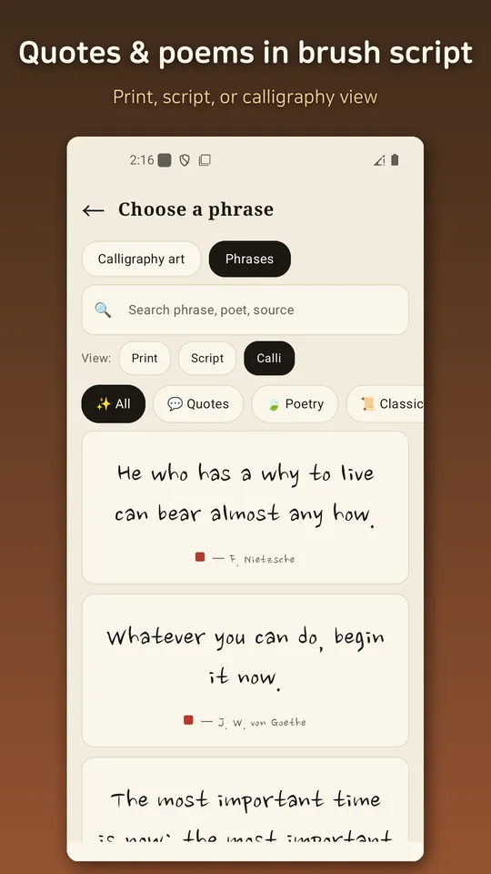

Calligraphy Tracing - Pilsa
Trace real Korean calligraphy art & quotes by hand; a calm brush smooths strokes






About this app
Don't just look at beautiful calligraphy — trace it with your fingertip.
Pilsa is a calligraphy practice and copywork app: real calligraphy artworks are laid faintly on paper, you zoom in to make the letters big, and you trace each stroke with your finger. Even shaky strokes are smoothed into brush-like calligraphy, so it doesn't matter whether you write well or not.
🖌️ Trace 198 real calligraphy pieces
A new piece opens every day as "today's calligraphy". Warm short phrases, quotes, and lines from classic Korean poets — pick or search any piece and start tracing.
🔍 Zoom in, pen stays the same
Fingers are thick and phone text is small. Zoom the paper to 1.5×, 2×, or 3×: only the guide grows while your pen width stays the same, so big letters are easy to trace. Pan with two fingers while zoomed.
✍️ Copy quotes and poems in brush script
View phrases in print, script, or calligraphy style and trace them: Nietzsche, Tolstoy, Goethe, the Analects, Laozi, and short affirmations.
🖼️ Save & share as a hanji card
Finished work becomes a card with a traditional-paper (hanji) texture you can save to your gallery or share with friends.
📚 Collection & streak
Finished pieces stack up in your collection, and a streak counter shows how many days in a row you've written.
⚠ Calligraphy artworks are in Korean (Hangul); the app interface is available in English. Artworks are provided by the Korea Copyright Commission (Gongu) under CC BY 4.0; the brush typeface is Nanum Brush Script (SIL OFL 1.1). All text content is public domain or original. Fully offline, no sign-up, no personal data collection.
Recommended for
- Anyone who wants to start calligraphy but doesn't know where to begin
- Anyone who wants to keep pretty calligraphy phrases in their own handwriting
- Anyone building a calm habit of copying one line a day
Android · free with ads · Developer: RealTunaLove · Store listing in 17 languages